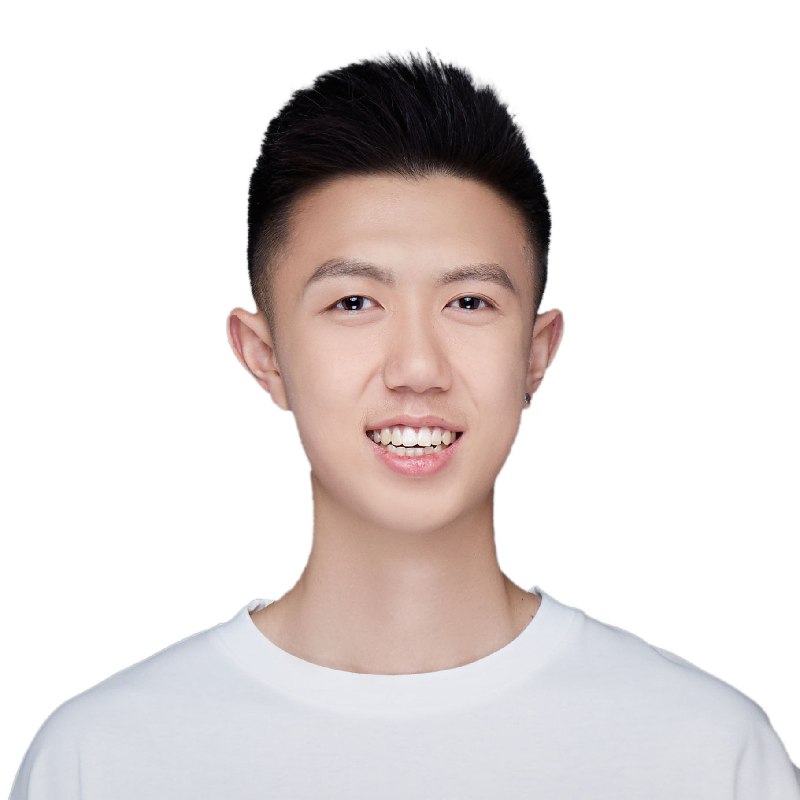

LONG Junxiao (Dante)
As an interdisciplinary researcher and designer, I am dedicated to integrating emerging technologies with empirical research to create user-centered products through rigorous methodologies. I am currently pursuing a Master’s degree in Human-Computer Interaction at Georgia Institute of Technology and hold both Bachelor’s and Master’s degrees from the School of Architecture at Tsinghua University, where I studied under Academician ZHUANG Weimin. My research and design interests span various domains, including user experience for internet products, virtual reality interaction design, wearable device interactions, human factors design, and environmental behavior studies.
In terms of technical expertise, I am proficient in a variety of 2D and 3D design tools, such as Figma, Adobe Suite, Rhino and Unity. Additionally, I have a strong command of multiple programming languages and research analysis tools, including Python, C#, HTML/CSS/JavaScript, MATLAB, and SPSS. This diverse skill set enables me to seamlessly integrate design and technology, driving innovative solutions.
Beyond my academic and design background, I was a starting player in the Tsinghua University Men’s Basketball Division II League. This experience has honed my exceptional teamwork and organizational skills. I excel in high-pressure environments, effectively managing resources to achieve goals while handling multiple tasks and deadlines with ease.